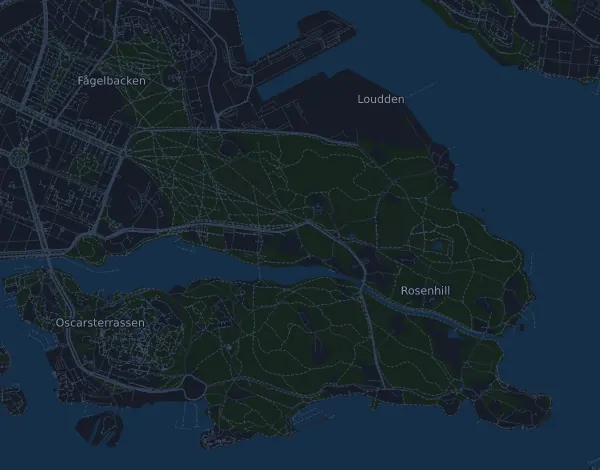

Premiärhalvan 21 km
- Distans
- 21,1 km
- Höjdmeter
- ↑ 80 m
- Högsta punkt
- 18 m ö.h.
- Underlag
- Väg
- Karaktär
- Flack
- Start
- kl. 11:00
Höjdprofil
Förbered dig med Mila
Mila är en löpcoach i appen. Lägger du till ett lopp i din plan planerar coachen veckorna fram till start efter din form, och ger dig en tidsprognos och en plan för tempo, vätska och energi på banan.

Rätt pass. Rätt dag.
Banan

Om banan
adidas Premiärhalvan är ett landsvägslopp på 21,1 km som utgår från Sportgärdet på Gärdet i Stockholm. Banan har 80 meter uppför och 79 meter nedför, så stigningarna och nedförslöporna tar i stort sett ut varandra. Hela loppet ligger mellan 1 och 18 meter över havet, och ingen stigning når 25 höjdmeter. Höjdmetrarna kommer i mindre partier, och ingen enskild backe avgör loppet.
Utan långa klättringar att spara dig inför är det jämnheten över 21,1 km som bär dig. Lägg ansträngningen så att den håller hela vägen. Låt de små stigningarna kosta lite fart, men inte mer kraft än resten av banan, och ta tillbaka farten på de korta nedförslöporna utan att trycka på. När inget i höjdprofilen bryter rytmen ligger utmaningen i att hålla fokus och hushålla med krafterna, så att du har något kvar de sista kilometrarna.
Beskrivningen är skriven av Milas coach med hjälp av AI, utifrån uppgifterna i Milas loppregister.
Inför start
Starttider
- kl. 11:00
Källa: stockholmmarathon.se, hämtat 25 november 2026
Tempotabell
Premiärhalvan 21 km på 1:30:00 – tid per km och mellantider
4:16 per km · km 5: 21:20 · km 10: 42:39 · km 15: 1:03:59 · mål: 1:30:00
Premiärhalvan 21 km på 1:45:00 – tid per km och mellantider
4:59 per km · km 5: 24:53 · km 10: 49:46 · km 15: 1:14:39 · mål: 1:45:00
Premiärhalvan 21 km på 2:00:00 – tid per km och mellantider
5:41 per km · km 5: 28:26 · km 10: 56:52 · km 15: 1:25:18 · mål: 2:00:00
Premiärhalvan 21 km på 2:15:00 – tid per km och mellantider
6:24 per km · km 5: 31:59 · km 10: 1:03:59 · km 15: 1:35:58 · mål: 2:15:00
Tiderna förutsätter jämnt tempo hela vägen. Det är ren räkning, ingen prognos: i backar, i trängsel och vid vätskekontroller varierar tempot.
Vanliga frågor
När går Premiärhalvan 21 km?
Premiärhalvan 21 km går lördag 24 april 2027. Kontrollera datum och starttid hos arrangören.
Vilken tid startar Premiärhalvan 21 km?
Enligt arrangören: kl. 11:00.
Hur lång är Premiärhalvan 21 km och hur många höjdmeter är det?
Loppet är 21,1 km långt med 80 höjdmeter uppför och 79 nedför. Högsta punkten ligger 18 m ö.h.
Hur ser banan på Premiärhalvan 21 km ut?
Banan räknas som flack, med 3,8 höjdmeter per km i snitt. Den har inga sammanhängande klättringar på 25 höjdmeter eller mer. Start och mål ligger på samma plats. Underlaget är väg.
Hur lägger jag upp farten på Premiärhalvan 21 km?
Sikta på en jämn ansträngning hela vägen, och håll igen de första kilometrarna när benen känns pigga och fältet drar iväg. Banan är flack, så ett jämnt tempo per kilometer fungerar bra. I Mila får du en tempoplan för just den här banan efter din egen form.
Fler lopp som det här
Fler lopp i närheten
- Uddloppet 10 km11 april 2027 · Karlshamn, Sverige
- Uddloppet Halvmaraton 21 km11 april 2027 · Karlshamn (Vägga IP), Sverige
- COOP Kungsholmen Runt 10 km8 maj 2027 · Stockholm (Rålambshovsparken, Kungsholmen), Sverige
- Vårruset Malmö 5 km11 maj 2027 · Malmö, Sverige
- Vårruset Göteborg 5 km13 maj 2027 · Göteborg, Sverige
- Premiärmilen 10 km3 april 2027 · Stockholm (Norra Djurgården), Sverige
Förbered dig med Mila
Rätt pass. Rätt dag.
Uppgifterna kommer ur banfilen och arrangörens information. Kontrollera datum, starttider och regler hos arrangören.
Mila är inte kopplad till, sponsrad av eller godkänd av arrangören eller loppets sponsorer. Namn och varumärken tillhör sina ägare. Arrangör eller rättighetsinnehavare? Begär ändring eller borttagning